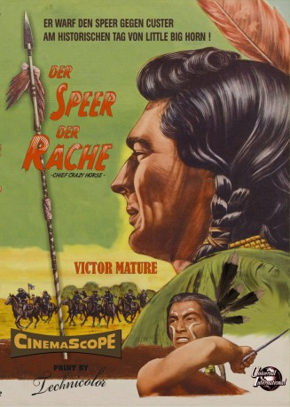
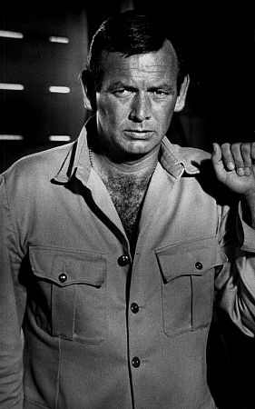
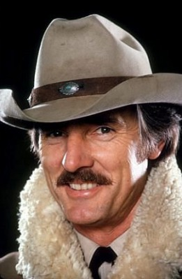
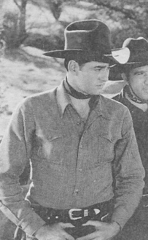

#4906 Der Speer der Rache
Alternativ: Chief Crazy Horse
 
 IMDB-Wertung: 6.1 / 10
IMDB-Wertung: 6.1 / 10  Metascore: 0
Metascore: 0 
Die heiligen Stätten und Traditionen der Lakota-Sioux-Krieger werden immer wieder durch die "weissen Teufel" gestört - die Goldsucher, die in ihrer kompromisslosen Gier stetig tiefer in die Reviere der Indianer vordringen. Um den Feinden Einhalt zu gebieten, schleudern die Indianer ihnen den "Speer der Rache" entgegen, personifiziert durch den legendären Indianerhäuptling Crazy Horse/Schwarzer Hengst (Victor Mature). Doch Verräter aus den eigenen Reihen und die Übermacht der Weißen lassen den Kampf ausweglos erscheinen...
Jahr: 1955
Dauer: 86 Minuten
FSK: 12
Land: USA Studio: Universal InternationalTonspuren:
Untertitel: Deutsch,
Auflösung: 1080p (1920x816) Größe: 6717 MB
Genre: Western, Biographie
Regisseur: George Sherman
Drehbuch: British Broadcasting Corporation (BBC)
Soundtrack:
Darsteller:
 Victor Mature als Crazy Horse
Victor Mature als Crazy Horse- Suzan Ball als Black Shawl
- John Lund als Major Twist
- Ray Danton als Little Big Man
- Keith Larsen als Flying Hawk
 Paul Guilfoyle als Worm
Paul Guilfoyle als Worm-  David Janssen als Lt. Colin Cartwright
- Robert Warwick als Spotted Tail
 James Millican als General Crook
James Millican als General Crook Morris Ankrum als Red Cloud
Morris Ankrum als Red Cloud- Robert F. Simon als Jeff Mantz
 James Westerfield als Caleb Mantz
James Westerfield als Caleb Mantz Stuart Randall als Old Man Afraid
Stuart Randall als Old Man Afraid-  Dennis Weaver als Maj. Carlisle
-  Henry Wills als He Dog
 Charles Horvath als Hardy , uncredited
Charles Horvath als Hardy , uncredited Regis Parton als Doctor , uncredited
Regis Parton als Doctor , uncredited- Robert St. Angelo als Sergeant , uncredited
- Donald Randolph als Aaron Cartwright
- Pat Hogan als Dull Knife
- John Peters als Sgt. Guthrie
- Emile Avery als Capt. William Fetterman , uncredited
- Willie Hunter Jr. als Cavalryman , uncredited
- David Miller als Lieutenant , uncredited
Datei: X:\HD-Western-1900-1959\Speer der Rache, Der (1955, FSK12, 1920x816).mkv seit 30.11.2016
Festplatte: HD Eastern+Western
 Es gibt insgesamt 98 Filme in der Gruppe 'HD-Western-1900-1959'
Es gibt insgesamt 98 Filme in der Gruppe 'HD-Western-1900-1959'